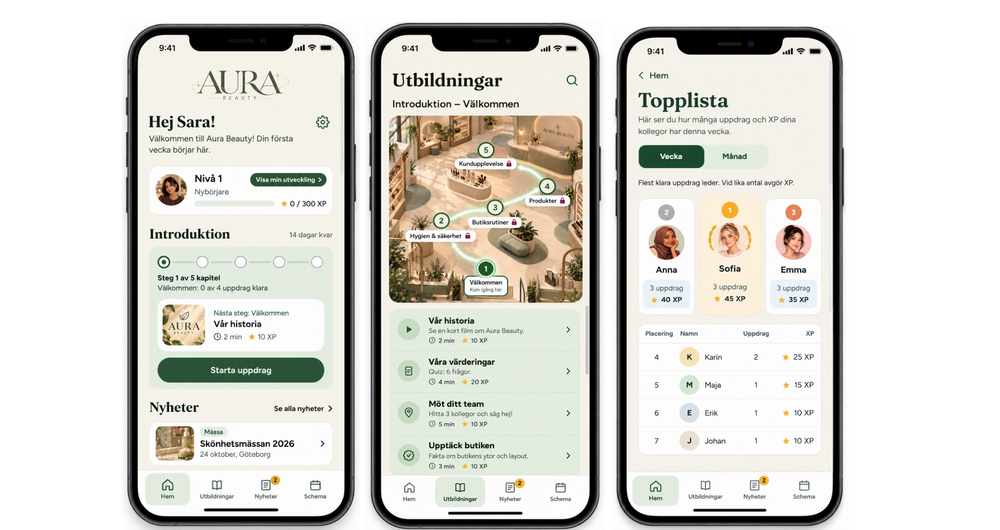

En spelifierad utbildningsapp för en fiktiv skönhetsbutik, utformad för att göra personalutbildning mer engagerande, tydlig och motiverande.
Tillsammans med min grupp utvecklade jag ett koncept för en utbildningsapp som hjälper anställda att lära sig om produkter, hygien, butiksrutiner och kundservice. Projektet fokuserade på hur spelpsykologi och spelifiering kan användas för att stödja lärande.
Projekttyp: Grupparbete
Fokus: UX/UI-design, spelifiering, spelpsykologi och användartester
Verktyg: Figma

Personal inom skönhetsbutiker behöver lära sig mycket information, från produktkunskap och hygien till kundbemötande och dagliga rutiner. Målet var att strukturera utbildningen så att användarna lättare kunde förstå vad de hade lärt sig och vad nästa steg var.
Appen använder XP, nivåer, upplåsbara utbildningskapitel, quiz och kundscenarier för att göra lärandet mer interaktivt. Användarna får följa sin utveckling och arbeta mot mer avancerade nivåer.
Praktiska uppgifter kopplar den digitala utbildningen till situationer som kan uppstå i en riktig butik. Spelmekaniken skulle stödja lärandet, inte bara fungera som ett extra lager ovanpå gränssnittet.
Vi genomförde tre testomgångar med totalt åtta deltagare, inklusive ett omtest. Vi undersökte bland annat progression, feedback, navigation och de olika spelifieringselementen.
Testerna visade att progressionen generellt var tydlig, men att topplistan kunde upplevas som förvirrande eller stressande. Deltagarna hade också olika inställning till tävlingsmoment.
Utifrån resultaten förtydligade vi upplåst och låst innehåll, förbättrade feedback och ledtrådar, gjorde sektionen för personlig utveckling tydligare och lade till en veckovy i schemat. Vi tog även bort achievements eftersom för många spelifieringselement gjorde upplevelsen mer komplicerad.
Projektet gav mig möjlighet att utforska hur spelpsykologi kan användas för att skapa en mer engagerande utbildningsupplevelse.
En viktig insikt var att fler spelelement inte automatiskt leder till en bättre användarupplevelse. Tydlig feedback, begriplig progression och meningsfulla mål var viktigare än att lägga till fler belöningar.